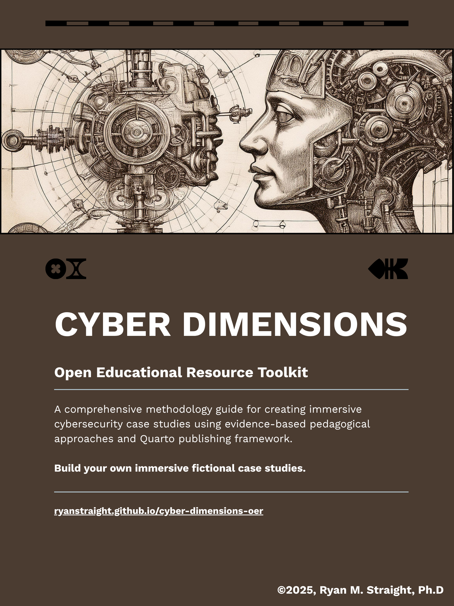

Cyber Dimensions: OER Toolkit
Build Your Own Immersive Cybersecurity Case Studies
Preface

This Open Educational Resource (OER) toolkit provides you with the Cyber Dimensions methodology—a sophisticated posthuman approach to cybersecurity education developed through systematic Design-Based Research at the University of Arizona. Rather than offering generic case study development guidance, this resource gives you the theoretical foundations and practical implementation framework you need to apply an innovative pedagogical methodology grounded in posthumanist educational theory, postphenomenological research principles, and assemblage thinking.
Why This Approach Matters
Contemporary cybersecurity education faces well-documented challenges in bridging theoretical knowledge and professional practice. Systematic reviews of the field consistently identify gaps between theoretical curricula and the complex, collaborative realities of cybersecurity work. Students report difficulty transferring classroom learning to professional contexts, while industry stakeholders note persistent misalignments between educational preparation and workplace requirements.
These challenges reflect deeper theoretical assumptions about learning and knowledge that may be inadequate for preparing your students to engage with cybersecurity’s distributed, sociotechnical character. Traditional pedagogical approaches typically position human learners as autonomous agents who acquire knowledge about technological systems, treating security as something humans “do to” technology rather than recognizing how security emerges through ongoing relationships among human expertise, technological systems, organizational structures, and social practices.
The Cyber Dimensions methodology draws on posthuman educational theory to help you address these foundational assumptions. Rather than simply improving existing approaches, it reconceptualizes cybersecurity education as assemblage creation—helping you develop learning environments where your students engage with complex networks of human and nonhuman actors that more accurately reflect professional cybersecurity practice.
This theoretical reorientation has practical implications for your curriculum design, assessment development, and pedagogical implementation. The methodology provides you with frameworks for creating educational experiences that recognize cybersecurity’s inherently collaborative and distributed character while maintaining rigorous academic standards and clear learning objectives. The approach has been developed through systematic Design-Based Research, ensuring both theoretical sophistication and practical applicability across diverse educational contexts.
Posthuman Cybersecurity Education: Beyond Anthropocentric Approaches
The Cyber Dimensions methodology helps you address fundamental limitations in traditional cybersecurity education that positions humans as autonomous agents who simply “use” technological systems. This anthropocentric paradigm fails to recognize the complex ways humans and technologies co-constitute each other in ongoing processes of becoming, limiting your students’ ability to understand and engage with the distributed character of contemporary cybersecurity practice.
Posthuman cybersecurity pedagogy recognizes that:
- Security emerges through assemblages: Cybersecurity effectiveness results from complex networks of human and nonhuman actors rather than individual human decision-making
- Learning is distributed: Understanding develops through engagement with sociotechnical assemblages rather than transmission of abstract principles
- Agency is relational: Both human learners and technological systems possess agency that shapes educational outcomes
- Ethics are entangled: Responsibility extends across human-technology networks rather than residing in individual moral agents
This methodology represents a significant theoretical contribution to cybersecurity education while maintaining practical utility for you as an educator. The combination of posthumanist rigor and pedagogical effectiveness distinguishes the approach from both generic instructional design and purely theoretical educational research.
Methodological Framework: Assemblage-Based Education
The Cyber Dimensions methodology employs systematic worldbuilding as assemblage creation, establishing coherent sociotechnical networks that embody posthumanist recognition of distributed agency across human and nonhuman actors. This approach draws upon sophisticated theoretical frameworks—posthuman inquiry heuristics, agential realism, assemblage theory, and postphenomenological methodology—to create educational experiences that transcend conventional case study development.
Worldbuilding as Posthuman Infrastructure
The centralized _worldbuilding.yml system represents more than technical data management–it embodies posthuman infrastructure that recognizes the agency of computational systems in educational delivery. This systematic approach creates stable assemblages that support multiple learning encounters while maintaining theoretical sophistication and internal coherence.
Traditional Approach: Develops isolated case studies as vehicles for delivering predetermined cybersecurity content to individual learners
Posthuman Methodology: Creates educational assemblages where human learners, fictional characters, technological systems, and organizational structures co-constitute understanding through ongoing intra-active processes
Five Pillars Reconsidered Through Posthuman Lens
The methodology reconceptualizes traditional pedagogical approaches through posthuman theoretical frameworks that recognize the agency of nonhuman actors in educational assemblages:
Rather than treating immersive fiction as narrative technique, the posthuman approach recognizes fictional worlds as material-semiotic practices that co-constitute learning experiences alongside human participants. Effective cybersecurity scenarios create agential cuts that make specific phenomena observable for learning while embodying situated knowledges that resist universal claims.
Systematic narrative continuity creates stable actor-networks that enable increasingly sophisticated analysis of cybersecurity phenomena. Recurring characters and organizations become obligatory passage points through which students must navigate to understand complex ethical and technical relationships that characterize real cybersecurity practice.
The inclusion of diverse stakeholder perspectives reflects posthuman ethics that recognizes ethical responsibility as distributed across assemblages rather than located in individual moral agents. Students develop response-ability—capabilities for responding appropriately to complex situations that exceed individual control.
Rather than managing cognitive load through simplification, the posthuman approach embraces complexity as emergent phenomena that arise through assemblage interactions. Learning environments preserve unpredictable outcomes that characterize real cybersecurity assemblages while supporting distributed cognition across human-technology networks.
Assessment recognizes that learning outcomes emerge through assemblage participation rather than individual cognitive achievement. Evaluation examines how students engage with complex human-technology-organization networks while valuing situated understanding and supporting ongoing becoming through formative participation.
Toolkit Organization and Theoretical Progression
This resource enables you to understand and apply posthuman cybersecurity education principles through systematic progression across four integrated domains that build from theoretical foundations through practical implementation while maintaining scholarly rigor throughout.
Foundation (Part 1): Establishing Theoretical Sophistication
The foundational section establishes the comprehensive theoretical framework supporting the Cyber Dimensions methodology, including:
- Theoretical Foundations: We begin with applied posthumanist pedagogical theory, providing a comprehensive framework for integrating Adams & Thompson’s (2016) posthuman inquiry heuristics, Barad’s (2007) agential realism, assemblage theory (1987), and postphenomenological methodology (1990)
- Posthuman Methodology: Core approach grounding cybersecurity education in posthumanist theory and postphenomenological design principles
- Development Environment: Technical infrastructure supporting posthuman educational assemblages
- Implementation Tutorial: Systematic guidance for applying theoretical principles in practice
Content Development (Part 2): Assemblage Creation and Narrative Design
The content development section focuses on creating educational assemblages that embody posthuman pedagogical principles:
- Worldbuilding as Infrastructure: Systematic assemblage creation through centralized worldbuilding systems that recognize nonhuman agency
- Narrative Design: Storytelling approaches grounded in material-semiotic practices and actor-network theory
- Assessment Framework: Evaluation approaches that recognize distributed learning across human-technology networks
Technical Implementation (Part 3): Posthuman Educational Technology
The technical implementation section addresses the computational and design competencies required for sophisticated educational assemblage development:
- Quarto Integration: Platform configuration that supports posthuman educational principles
- Visual Design: Aesthetic approaches that embody theoretical sophistication
- Multimedia Integration: Multi-modal assemblage creation across diverse media
- Quality Assurance: Evaluation processes grounded in posthuman theoretical consistency
Resources and Templates (Part 4): Applied Methodology and Assessment
The resources section provides practical tools for implementing posthuman cybersecurity education while maintaining theoretical rigor:
- Case Study Templates: Frameworks embodying posthuman pedagogical principles
- Assessment Templates: Evaluation approaches recognizing assemblage participation
- Case Study Examples: Demo repository with complete case studies demonstrating posthuman principles in practice
- Cross-Case Continuity: Systematic approaches to assemblage coherence across multiple scenarios
Educational Innovation and Scholarly Contribution
This toolkit represents educational innovation that contributes to both cybersecurity pedagogy and posthuman educational theory. The methodology demonstrates how posthuman principles can be systematically integrated into professional education while advancing theoretical understanding of human-technology relations in learning contexts.
The Cyber Dimensions methodology employs Design-Based Research principles that recognize educational technology development as systematic inquiry contributing to both practical effectiveness and theoretical advancement. This approach generates evidence about how posthuman pedagogical principles enhance cybersecurity education while producing transferable insights for educational research.
Next Steps: Toward Posthuman Practice
This toolkit enables you as a cybersecurity educator (and others; cybersecurity is simply the domain we’ve chosen) to move beyond anthropocentric approaches toward posthuman practice that recognizes the distributed character of contemporary cybersecurity work. By understanding and applying these methodological principles, you can create learning experiences that prepare your students for professional practice characterized by complex human-technology assemblages rather than simple human control over passive technological systems.
You can start exploring posthuman cybersecurity education by:
- Understanding the theoretical foundations that ground this innovative approach
- Exploring the methodology through posthuman pedagogical principles
- Examining systematic worldbuilding as assemblage creation and infrastructure development
- Reviewing the case study examples to see posthuman principles in practice